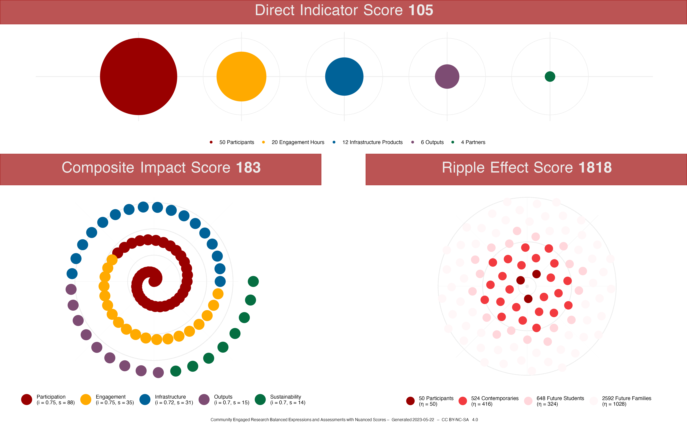

CER · BEANS: Community Engaged Research Balanced Expressions and Assessments with Nuanced Scores
A Framework for Constructing Quantitative Metrics for Community Engaged Research Projects
![]()
Introduction
“Every little bean must be heard as well as seen!”
— Erich Maria Remarque, All Quiet on the Western Front

Quantitative measures capture only a small piece of the (bean) pie, but people in academia ❤️ love ❤️ putting numbers on things and counting them (beans).
Rather than sitting back and stewing like a pot of vegetarian chili while fretting about whether or not faculty committees and administrators will count the kinds of beans I hope they would count, I decided to create my own set of beans for them to count.
Therefore:
Community Engaged Research Balanced Expressions and Assessments with Nuanced Scores (CER · BEANS)
I was inspired by the Altmetric badge, so I want to make sure to create a system of beans that is:
- Easy to grok and nice to look at.
- Authentic and meaningful to the work and experiences of community engaged researchers.
- Usable as a critical framing for the kind of work community engaged researchers should be focusing on.
- Translatable, transferable, robust, resilient, dynamic, and extensible.
How ’bout these beans?

Pretty radicle, eh?
I am open to collaboration, dialogue, and disagreement. You can even open an issue if you’d like to make it official. Contributions are welcomed, please read the Code of Conduct.
Identifying the Metrics
“You never cook onions with your beans. That’s a recipe for tear gas.”
— Justin Swapp, The Shadow’s Servant

When evaluating community-engaged programs, it’s important to consider various metrics that assess different aspects of the program’s effectiveness and impact.
It is important to remember a number, a score, or even a collection or bean hill of scores or numbers, do not tell the whole story of your community engaged research. This framework is provided to help you tell that story using a system that is easily recognizable and considered a valid form of evidence.
These numbers are a guidepost for your readers–or more likely–your evaluators.
Now that I’ve provided the warning, remember that academics are first and foremost makers of bean stalks: we are trained to make cases and construct narratives. Here are some tips for you to consider about what CER-BEANS does provide for you as you construct a narrative around your work:
A builder, like yourself.
– Edna St. Vincent Millay, The Bean-Stalk
ü™û Reflection: It provides an overall reflection on your work and where you have focused your energies. CER-BEANS gives you an indication of the impact your work has had, allowing you to discuss your successes.
üì∏ Snapshot: It provides a snapshot of where you are in a longer process, what has worked well so far, and where you will be focusing your efforts in the near future.
üó∫Ô∏è Map: It provides a rough map of where you and your collaborators, partners, and participants can take the work moving forward.
CER-BEANS focuses on five categories and they each result in an category score. Each of the category scores contribute to the overall score. These are the five categories:
- Participants
- Engagement
- Infrastructures
- Outputs
- Sustainability
Each of the category scores (\(S_C\)) follow a predictable pattern, that includes an impact number (\(I_C\)) that is amplified by a set of category component ratings (\(R_C\), individual ratings represented by \(r_{C1} \ldots r_C\)). This is the general formula for a category score:
\[ S_C = W_C \cdot I_C \cdot \left(1 + \frac{\sum r_{C_1} \ldots r_{C_n}}{|R_C|}\right) \]
The process for computing each of the category scores is essentially calculating the average for the ratings in the category and then adding 1 to this average since the ratings are between 0 and 1 and only numbers greater than 1 will amplify things. The amplifier score is then multiplied by the impact number, which can be the number of participants, contact hours, institutional partners, etc.
The categories contribute to the overall score (\(S_O\)) as a straight-forward summation of all the category scores, where \(s\) represents the category scores, \(x\) represents the set of categories, and \(n\) is the number of categories:
\[ S_O = \sum_{C=1}^n s_C \]
This overall score is similar to the Altmetric Attention Score in that it is a weighted count. The overall score increases
Each of these categories and their components are described in some detail below. The idea, the math, the concepts, are all licensed under a CC BY-SA 4.0 license, so you are welcome to take these ideas and adapt them to your particular needs and preferences (as long as you give credit where credit is due and share your adapted work alike).
Participants Component Score
The Participants Component Score represents the people involved in the project. Included in this score are the number of people involved, representation of marginalized community members and identities, and representation of intersectional identities and community membership.
participants_weight <- 1| marginalized_proportions | intersectionally_marginalized | participants_value |
|---|---|---|
| No Marginalized Participants | No Intersectionally Marginalized Participants | 0.10 |
| A Few Marginalized Participants | A Few Intersectionally Marginalized Participants | 0.25 |
| Some Marginalized Participants | Some Intersectionally Marginalized Participants | 0.33 |
| Just Under Half Marginalized Participants | Just Under Half Intersectionally Marginalized Participants | 0.40 |
| About Half Marginalized Participants | About Half Intersectionally Marginalized Participants | 0.50 |
| Just Over Half Marginalized Participants | Just Over Half Intersectionally Marginalized Participants | 0.75 |
| Mostly Marginalized Participants | Mostly Marginalized Intersectionally Participants | 0.85 |
| Predominantly Marginalized Participants | Predominantly Intersectionally Marginalized Participants | 0.90 |
| Nearly All Marginalized Participants | Nearly All Intersectionally Marginalized Participants | 0.95 |
| All Marginalized Participants | All Marginalized Intersectionally Participants | 1.00 |
Number of Participants
How many participants involved? This is \(p_n\).
For the Professional Development project at one of the elementary schools, there were 70 directly teachers involved. For Family as Faculty as an Infrastructure, the participants consisted of the following:
- 1 School Principal
- 2 Institutional Leaders
- 3 University Faculty and Staff (not part of the project team)
- 4 Neighborhood Participants
- 5 Family Leaders
- 5 Cooperating Teachers
- 30 Undergraduate Students
This is a total of 50 direct participants.
tg_number_of_participants <- 70
fafi_number_of_participants <- 50
stst_number_of_participants <- 7Marginalized Proportions Score
What proportion of the participants represent and come from marginalized identities and communities? This is \(p_m\).
You can consider the direct population you are working with, or you can consider your target population who may be one degree removed when deciding on the \(p_m\) rating. If you consider your target, rather than direct, population, there is a “penalty” or damping for doing so in the form of a marginalized proportions coefficient, \(\beta_m\). If you are you working directly with the population, \(\beta_m\) is 1, or no damping If you are working with, for example, teachers or health care workers who will work with your target population, then \(\beta_m\) is 0.85 to dampen the score.
For the Professional Development project, the students in the school–the actual target population–predominantly represent marginalized identities and communities, so \(p_m\) is 0.9. The students are one degree away from the teachers, however, so \(\beta_m\) is 0.85 to dampen the component score. For Family as Faculty as an Infrastructure, just over half of the participants represent marginalized identities and communities, so \(p_m\) is 0.75. We are considering this population directly (we can consider ripple effects later on) so \(\beta_m\) is set to 1 so there is no damping of the score.
stst_marginalized_proportions_value <- 1
stst_marginalized_proportions_coefficient <- 1
tg_marginalized_proportions_value <- 0.95
tg_marginalized_proportions_coefficient <- 0.85
fafi_marginalized_proportions_value <- 0.75
fafi_marginalized_proportions_coefficient <- 1Intersectionally Marginalized Proportions Score
What proportion of the participants represent and come from multiple and intersecting marginalized identities and communities? This is \(p_i\).
Just like with the Marginalized Proportions Score, you can consider the direct population you are working with, or you can consider your target population. The Intersectionally Marginalized Coefficient, \(\beta_i\), is the same as above. If you consider your target, rather than direct, population, \(\beta_i\) is 0.85. If you are you working directly with the population, \(\beta_i\) is 1.
For the Professional Development project, we will again be considering the intersectionality of the students in the school. Nearly all students represent marginalized identities and communities, so \(p_i\) is 0.9. The students are one degree away so \(\beta_i\) is 0.85 to dampen the component score. For Family as Faculty as an Infrastructure, just over half of the participants represent marginalized identities and communities, so \(p_m\) is 0.75 and \(\beta_i\) is set to 1.
stst_intersectionally_marginalized_value <- 1
stst_intersectionally_marginalized_coefficient <- 1
tg_intersectionally_marginalized_value <- 0.95
tg_intersectionally_marginalized_coefficient <- 0.85
fafi_intersectionally_marginalized_value <- 0.75
fafi_intersectionally_marginalized_coefficient <- 1Calculate Participant Component Score
The Participant Component Score is calculated through the following equation:
\[ p_s = p_w \cdot p_n \cdot \left( 1 + \frac{(\beta_m \cdot p_m + \beta_i \cdot p_i)}{2} \right) \]
We find that the Professional Development Project has a Participant Index (\(p_i\)) of 0.81 (adjusted) and a full Participant Score (\(p_s\)) of 127. Family as Faculty as an Infrastructure has a Participant Index (\(p_i\)) of 0.75 and a Participant Score (\(p_s\)) of 88.
Engagement
Number of contact hours \(e_h\).
engagement_weight <- 1| frequency | duration | value |
|---|---|---|
| Once | One Day | 0.10 |
| Once Per Year | Less Than A Week | 0.25 |
| Several Times Per Year | One Week | 0.33 |
| Every Other Month | 2-3 Weeks | 0.40 |
| Once Per Month | One Month | 0.50 |
| Every Other Week | One Semester | 0.75 |
| Once Per Week | One Year | 0.85 |
| 2-4 Times Per Week | 2-3 Years | 0.90 |
| 5 Times Per Week | 3-10 Years | 0.95 |
| Daily | 10+ Years | 1.00 |
Engagement Hours
stst_engagement_hours <- 16
tg_engagement_hours <- 18
fafi_engagement_hours <- 20Frequency
stst_frequency_score <- 0.85
tg_frequency_score <- 0.50
fafi_frequency_score <- 0.75Duration
stst_duration_score <- 0.75
tg_duration_score <- 0.85
fafi_duration_score <- 0.75Calculate Engagement Score
\[ e_s = e_w \cdot e_h \cdot \left(1 + \frac{(e_d + e_f)}{2}\right) \]
Infrastructure Score
infrastructure_weight <- 1.5| purpose | co_construction | value |
|---|---|---|
| Promoting Efficiency Only | Initiation and Construction From One Party | 0.10 |
| Promoting Predominantly Efficiency And Recognizing Plurality and Multivocality | Initiation and Construction From One Party With Feedback By Another | 0.50 |
| Promoting Mostly Efficiency And Recognizing Plurality and Multivocality | Initiation From One Party and Construction By Another | 0.90 |
| Promoting Mostly Efficiency And Recognizing Plurality, Multivocality, and Honor | Initiated and Constructed Mostly Equitably | 0.95 |
| Promoting Efficiency, Plurality, Multivocality, and Honor Equitably | Initiated and Constructed Equitably | 1.00 |
Number of Intrastructure/Intermediate Products
stst_number_of_infrastructure_products <- 8
tg_number_of_infrastructure_products <- 10
fafi_number_of_infrastructure_products <- 12Infrastructure Purpose
stst_infrastructure_purpose <- 0.90
tg_infrastructure_purpose <- 0.90
fafi_infrastructure_purpose <- 0.95Infrastructure Co-Construction
stst_infrastructure_co_construction <- 0.10
tg_infrastructure_co_construction <- 0.10
fafi_infrastructure_co_construction <- 0.50Calculate Infrastructure Score
\[ i_s = i_p \left(1 + \frac{(i_u + i_c)}{2}\right) \]
Outputs Score
outputs_weight <- 1.5| venues | inclusion | value |
|---|---|---|
| Only One Type of Venue | No Inclusion | 0.10 |
| Predominantly One Type of Venue | Member Check Opportunities | 0.50 |
| Mostly One Type of Venue | Inclusion in Writing | 0.90 |
| Almost Even Mix of Venues | Inclusion in Data Curation, Analysis, and Writing | 0.95 |
| Even Mix of Venues | Full Partnership | 1.00 |
Number of Outputs Products
stst_number_of_outputs <- 1
tg_number_of_outputs <- 0
fafi_number_of_outputs <- 6Distribution of Venues
stst_distribution_of_venues <- 0.10
tg_distribution_of_venues <- 0.10
fafi_distribution_of_venues <- 0.90Inclusion of Participants and Partners
stst_inclusion_of_participants <- 0.90
tg_inclusion_of_participants <- 0.10
fafi_inclusion_of_participants <- 0.50Calculate Outputs Score
\[ o_s = o_p \left(1 + \frac{(o_v + o_i)}{2}\right) \]
Sustainability
sustainability_weight <- 2| responsibility | material | value |
|---|---|---|
| Responsibility Distributed to One Partner | No Material Support | 0.10 |
| Responsibility Predominantly Distributed to One Partner | Material Support Predominantly Through One Partner | 0.50 |
| Responsibility Mostly Distributed to One or More Partners | Material Support Mostly Through One or More Partners | 0.90 |
| Almost Equitable Distribution of Responsibility Across Partners | Material Support Almost Equitably Distributed Across Partners | 0.95 |
| Equitable Distribution of Responsibility Across Partners | Equitable Material Support Across Partners | 1.00 |
Number of Institutional Partners
stst_number_of_partners <- 2
tg_number_of_partners <- 1
fafi_number_of_partners <- 4Distribution of Responsibility
stst_distribution_of_responsibility <- 0.5
tg_distribution_of_responsibility <- 0.5
fafi_distribution_of_responsibility <- 0.9Distribution of Material Support
stst_distribution_of_material_support <- 0.5
tg_distribution_of_material_support <- 0.5
fafi_distribution_of_material_support <- 0.5Calculate Sustainability Score
\[ s_s = s_p \left(1 + \frac{(s_r + s_m)}{2}\right) \]
Ripple Effects
One of the trickier elements to measure in community-engaged research are “ripple effects.” Because we are working in direct contact and cooperation with publics, we can assume that the work we do together has a broader impact than just the time we spend together. Ripple effects mapping is an excellent qualitative tool for capturing and understanding the ways in which participants’ views and practices change through the cooperative work. It is, however, very difficult to distill into a quantitative metric.
For the purposes of these metrics, we use the number of people potentially impacted as a way to measure these ripple effects over a number of degrees of separation from the participants directly impacted.
It is understood that with each degree of separation, there is going to be a lessening of impact; the equation used to calcuate the Ripple Effect (\(\eta_r\)) at each degree (\(d_r\)) includes both a decay constant (\(\lambda_r\)), which is set to 0.55, and utilizes an inverse logarithmic function to calculate a reduction of impact over each degree.
\[ \eta_r = \lambda_r \cdot \frac{n_r}{\log(d_r + 1)} \]
In this equation, \(n_r\) represents the number of people potentially impacted by the community engaged work. This is divided by the logarithm of the degree of separation (\(d_r\)) and then multiplied by the decay constant (\(\lambda_r\)), providing a ripple effect score (\(\eta_r\)) at each degree of separation.
Teacher Professional Development
For the Professional Development project, impact at each degree is determined this way:
- Direct Impact: 70 teachers participated in the Professional Development project.
- 1 Degree of Separation: There are 522 students enrolled in the school, resulting in the likelihood that there will be some impact from the Professional Development.
- 2 Degrees of Separation: The average family size in Indianapolis is 3.04 people. The potential family size, however, is assumed to be rounded up to 4 people in a family. This allows for “non-traditional,” non-normative, and more expansive family structures to be counted. This translates to potentially around 2,088 family members.
pdtg_ripple <- data.frame(
group = c(0, 1, 2),
group_name = c(
"Teachers",
"Students",
"Family Members"
),
values = c(70, 522, 2088)
)Family as Faculty as an Infrastructure
The Family as Faculty as an Infrastructure is a much more complex project, even though it may directly involve fewer people. As delineated in the Participants section, there are a number of different categories of participants. Impact is also mapped out to a further degree given that it involves Teacher Education Students, so their future K-12 students need to be considered. Impact at each degree is determined in the following manner:
- Direct Impact: There are 50 participants directly involved in the project as outlined in the Participants section.
- 1 Degree of Separation: The complexity of the project is clearly evident at this degree, as there are different connections that can be considered. Because the Teacher Education Students are involved in the school, we include the 388 students in the school. In addition, we include four family members for each Family Leader and Neighborhood Caucus Member, for a total of 36. We also assume approximately 100 members of Down Syndrome Indiana who may be reached at this degree. This results in potentially 524 people being impacted.
- 2 Degrees of Separation: According to a survey of the Teacher Education Students, 80%, or 24 students, indicated that they were going to be continuing on the path to becoming a teacher. We can assume that each of these future teachers will have an average of 26.9 K-12 students in their classes in Indiana. This translates to a potential of 648 K-12 students per year.
- 3 Degrees of Separation: Because this is a project that links and empowers families and educators to best support the learning of K-12 students, the last degree of separation involves the potential families of the future K-12 students. Four family members for 648 students potentially results in 2592 family members per year.
fafi_ripple <- data.frame(
group = c(0, 1, 2, 3),
group_name = c(
"Participants",
"Contemporaries",
"Future Students",
"Future Families"
),
values = c(50, 524, 648, 2592)
)STEM Studio
stst_ripple <- data.frame(
group = c(0, 1, 2),
group_name = c(
"Participants",
"Family Members",
"Friends"
),
values = c(7, 28, 35)
)Calculate and Visualize Ripple Effects
The Professional Development project has a Ripple Effect Score of 1529. The ripple effect plot, based on a Vogel Spiral, looks like this:
The Family as Faculty as an Infrastructure project has a Ripple Effect Score of 1818. The ripple effect plot looks like this:
The STEM Studio project has a Ripple Effect Score of 47. The ripple effect plot looks like this:
This is a model, and while it is robust, it is still an estimation of the ripple effects of community-engaged research projects. It is important to provide accurate and well-reasoned numbers in the model, and it is important to capture different types of evidence to support a deep understanding of the impacts of this type of research.
Composite Impact Score
\[ S_O = \sum_{x=1}^n s_x \]
The Overall Score \(S_O\) for the STEM Studio is 69, the Overall Score \(S_O\) for the Professional Development is 182, and the Overall Score \(S_O\) for Family as Faculty as an Infrastructure is 183.
Overall Representation
“Red Beans and Ricely Yours”
– Louis Armstrong

Professional Development Example
An example of a detailed badge for a professional development program at a school. This badge contains multiple levels of information including the overall score, the ripple effect score, and direct indicators.

Family as Faculty as Infrastructure Example
STEM Studio Example
Reuse
Citation
@misc{fprice2023,
author = {Jeremy F Price},
title = {CER \&Middot; {BEANS:} {Community} {Engaged} {Research}
{Balanced} {Expressions} and {Assessments} with {Nuanced} {Scores}},
date = {2023},
url = {https://github.com/jeremyfprice/cer-beans},
langid = {en}
}